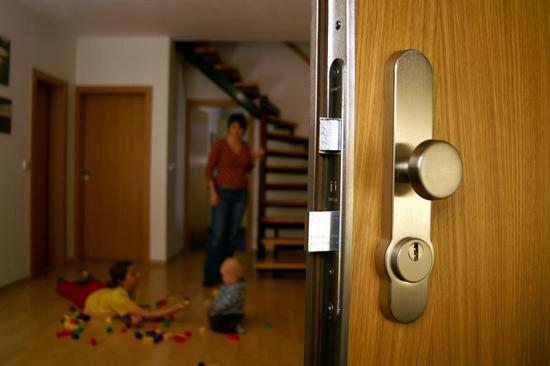
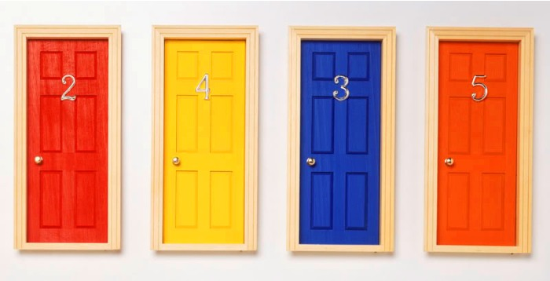
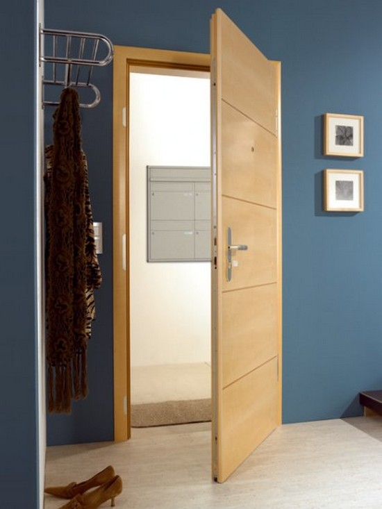

Способы утепления дверей

Очень часто в квартирах и домах не удается сохранить тепло именно из-за того, что входная дверь выпускает его из дома, в добавок еще и пропуская снаружи холод. Решение одно – необходимо утепление входной двери самостоятельно или с помощью специалистов. Это поможет вам поднять температуру не меньше, чем на 3-5 градусов, при этом исчезнут сквозняки и вы свободно сможете наслаждаться просмотром фильмов в любимом положении – сидя на теплом полу, или же играть с ребенком, не переживая, что он простудится.

Утепление входной двери
Хорошо, если у вас есть теплоизоляция дверей, предусмотренная производителем. В таком случае изолирующая прослойка уже вложена в дверное полотно. Но если у вас самая обычная дверь, ничем не «начиненная», как поступить в таком случае, как утеплить входную дверь и сохранить тепло в доме? Именно это мы и обсудим в данной статье.
Способы утепления входной двериИнтенсивность необходимого утепления зависит, в первую очередь, от того, из какого материала сделана ваша дверь. Если это дерево, то вам повезло больше, так как такие двери самые теплые, соответственно, и утеплить их легче, а вот металлические, наоборот, требуют гораздо больших усилий.

Утепление входной двери
Одним из лучших решений утепления будет установка второй двери, что на самом деле можно встретить почти в каждом втором доме или квартире. Вторая дверь служит для утепления дома таким образом, что между нею и главной входной дверью создается теплоизолирующий тамбур, замедляющий процесс утекания тепла.
Также необходимо избавиться от всех щелей, через которые в квартиру задувает холод. Самые существенные щели могут быть в пространстве между дверью и ее коробкой. Их достаточно эффективно можно изолировать, задув монтажной пеной.
Стоит и максимально уплотнить дверь любым уплотнителем. Сегодня строительные компании предлагают различные их виды. Посоветуйтесь с продавцом и выберите такой уплотнитель для двери, который выдержит большие нагрузки, ведь дверь открывается достаточно часто.

Как утеплить входную дверь самостоятельно
Если вы живете в квартире, да еще и на нижних этажах, то важно, чтобы и входная дверь в подъезд не оставалась открытой. Собственно, она должна закрываться автоматически – это можно сделать с помощью установки доводчика или же, обратившись в домофонную компанию совместно с остальными жильцами. Поверьте, если этого не сделать, дверь все равно часто будет оставаться открытой, так как многие люди не беспокоятся о тепле и уюте в вашей квартире – разносчики рекламы, почтальоны или просто зашедшие в гости к вашим соседям по подъезду.
Как утеплить входную дверь поролоном самостоятельноЕсли вы ищете способы, как утеплить входную дверь своими руками недорого, то используйте самый распространенный и привычный материал – поролон. Такой способ не займет у вас много времени, да и стоить будет недорого.
На самом деле, поролон – не лучший способ утепления входной двери, если вы собираетесь ее только уплотнить по бокам. А вот нашить его на саму дверь с обеих сторон можно. Такой способ подойдет в том случае, если вам необходимо утеплить деревянную дверь.
Итак, приступим. Для утепления входной двери поролоном вам понадобятся:
- Клей;
- Поролон;
- Деревянные или пластиковые рейки;
- Доска (можно с ажурными украшениями) для порога;
- Обивочная ткань.
Хотелось бы заметить, что ткань для обивки двери лучше всего изначально подобрать с водоотталкивающими свойствами, например – искусственную кожу или дерюгу.
Утепление входной двери начните с того, что снимите с двери все старое покрытие и утеплители и тщательно помойте дверь. Дайте ей высохнуть, затем обклейте ее с внешней и внутренней сторон поролоном, который для надежности можно предварительно склеить между собой в несколько слоев.
После этого обтяните дверь тканью или дерматином, при желании украсив его декоративными гвоздями для обоев. Но помните, чем больше гвоздей вы вобьете в свою дверь, тем хуже она будет хранить тепло, так как вбивая гвозди, вы прессуете утеплитель, лишая его теплосберегающих свойств.
Теперь займитесь дверной коробкой. Набейте по периметру двери предварительно обтянутые поролоном и тканью рейки, с таким расчетом, чтобы дверь в закрытом виде прилегала к ним максимально плотно, не оставляя щелей.
В завершение утепления поролоном входной двери закройте нижнюю щель порогом, также стараясь обойтись без каких либо зазоров.
Готово! Вы сделали своими руками дверь, которая не только сохранит тепло в вашей квартире, но и защитит вас от сторонних шумов и запахов, а значит – подарит уют.